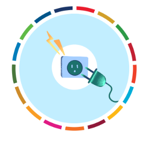
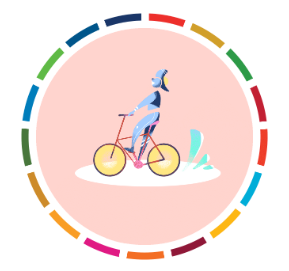
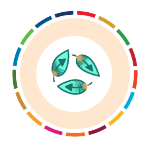
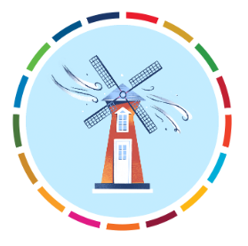

Save energy at home Use less energy by lowering your heating and cooling, switching to LED light bulbs and energy-efficient electric appliances, washing your laundry with cold water, or hanging things to dry instead of using a dryer.


Walk, bike, or take public transport Walking or riding a bike instead of driving will reduce greenhouse gas emissions -- and help your health and fitness. For longer distances, consider taking a train or bus. And carpool whenever possible..

Reduce, reuse, repair & recycle To protect our climate, buy fewer things, shop second-hand, repair what you can, and recycle..

Change your home's source of energy If possible, see if you can switch to renewable sources such as wind or solar. Or install solar panels on your roof to generate energy for your home.